Lecciones de circuitos eléctricos - Volumen III
Capítulo 9
CIRCUITOS SEMICONDUCTOR ANALÓGICOS PRÁCTICOS
- ElectroStatic Discharge
- Power Supply circuits
- Amplifier circuits -- PENDING
- Oscillator circuits -- INCOMPLETE
- Phase-locked loops -- PENDING
- Radio circuits -- INCOMPLETE
- Computational circuits
- Measurement circuits -- INCOMPLETE
- Control circuits -- PENDING
- Contributors
- Bibliography
*** INCOMPLETO ***
ElectroStatic Discharge
El capítulo 1.1 del Volumen I analiza la electricidad estática y cómo se crea. Esto tiene mucha más importancia de lo que podría suponerse en un principio, ya que el control de la electricidad estática desempeña un papel importante en la electrónica moderna y otras profesiones. Un evento de descarga electrostática ocurre cuando una carga estática se elimina de manera incontrolada y en lo sucesivo se denominará ESD.
La ESD se presenta en muchas formas, puede ser tan pequeña como 50 voltios de electricidad y se ecualiza hasta decenas de miles de voltios. La potencia real es extremadamente pequeña, tan pequeña que generalmente no representa ningún peligro para alguien que se encuentre en el camino de descarga de ESD. Por lo general, se necesitan varios miles de voltios para que una persona note la ESD en forma de chispa y el familiar golpe que la acompaña. El problema con las ESD es que incluso una pequeña descarga que puede pasar completamente desapercibida puede arruinar los semiconductores. Una carga estática de miles de voltios es común; sin embargo, la razón por la que no es una amenaza es que no hay ninguna corriente de duración sustancial detrás de ella. Estos voltajes extremos permiten la ionización del aire y permiten que otros materiales se descompongan, que es la raíz de donde proviene el daño.
La ESD no es un problema nuevo. La fabricación de pólvora negra y otras industrias pirotécnicas siempre han sido peligrosas si se produce un evento de ESD en circunstancias equivocadas. Durante la era de los tubos (también conocidos como válvulas), la ESD era un problema inexistente para la electrónica, pero con la llegada de los semiconductores y el aumento de la miniaturización, se ha vuelto mucho más grave.
Los daños a los componentes pueden ocurrir, y generalmente ocurren, cuando la pieza está en la ruta ESD. Muchas piezas, como los diodos de potencia, son muy robustas y pueden soportar la descarga, pero si una pieza tiene una geometría pequeña o delgada como parte de su estructura física, entonces el voltaje puede dañar esa parte del semiconductor. Las corrientes durante estos eventos se vuelven bastante altas, pero se encuentran en el marco de tiempo de nanosegundos a microsegundos. Esto deja parte del componente permanentemente dañado, lo que puede causar dos tipos de modos de falla. Catastrófico es el más fácil, dejando la pieza completamente no funcional. Lo otro puede ser mucho más grave. El daño latente puede permitir que el componente problemático funcione durante horas, días o incluso meses después del daño inicial antes de una falla catastrófica. Muchas veces a estas piezas se les llama “heridos andantes”, ya que están funcionando pero mal. Cifra belowSe muestra un ejemplo de daño ESD latente ("heridos ambulantes"). Si estos componentes acaban desempeñando una función de soporte vital, como en el caso del uso médico o militar, las consecuencias pueden ser nefastas. Para la mayoría de los aficionados es un inconveniente, pero puede resultar caro.
{kind=link}
Incluso los componentes que se consideran bastante resistentes pueden resultar dañados por ESD. Los transistores bipolares, los primeros amplificadores de estado sólido, no son inmunes, aunque son menos susceptibles. Algunos de los componentes más nuevos de alta velocidad pueden estropearse con tan solo 3 voltios. Hay componentes que podrían no considerarse en riesgo, como algunas resistencias y condensadores especializados fabricados con tecnología MOS (Metal Oxide Semiconductor), que pueden dañarse mediante ESD.
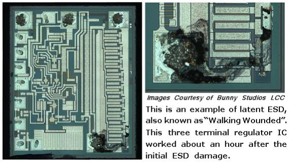
ESD Damage Prevention
Antes de poder prevenir la ESD, es importante comprender qué la causa. Generalmente, los materiales que se encuentran alrededor del banco de trabajo se pueden dividir en 3 categorías. Estos son ESD generativo, ESD neutro y ESD disipativo (o conductor ESD). Los materiales generativos de ESD son generadores estáticos activos, como la mayoría de los plásticos, pelo de gato y ropa de poliéster. Los materiales neutros ESD son generalmente aislantes, pero no tienden a generar ni retener muy bien cargas estáticas. Ejemplos de esto incluyen madera, papel y algodón. Esto no quiere decir que no puedan ser generadores estáticos o un peligro de ESD, pero el riesgo se minimiza en cierta medida por otros factores. La madera y los productos de madera, por ejemplo, tienden a retener la humedad, lo que puede hacerlos ligeramente conductores. Esto es cierto para muchos materiales orgánicos. Una mesa muy pulida no entraría en esta categoría, porque el brillo suele ser plástico o barniz, que son aislantes muy eficaces. Los materiales conductores ESD son bastante obvios, son las herramientas metálicas que se encuentran por ahí. Los mangos de plástico pueden ser un problema, pero el metal eliminará la carga estática tan rápido como se genera si está sobre una superficie conectada a tierra. Hay muchos otros materiales, como algunos plásticos, que están diseñados para ser conductores. Caerían bajo el título de disipativos de ESD. La suciedad y el hormigón también son conductores y se incluyen en el título disipativo de ESD.
Hay muchas actividades que generan estática y es necesario tenerlas en cuenta como parte de un régimen de control de ESD. El simple hecho de quitar la cinta de un dispensador puede generar un voltaje extremo. Rodarse en una silla es otro generador de estática, al igual que rascarse. De hecho, cualquier actividad que permita que dos o más superficies se froten entre sí generará con bastante seguridad alguna carga estática. Esto se mencionó al principio de este libro, pero los ejemplos del mundo real pueden ser sutiles. Esta es la razón por la que se necesita un método para eliminar continuamente este voltaje. Se deben evitar cosas que generen grandes cantidades de estática mientras se trabaja en componentes.
El plástico suele estar asociado a la generación de estática. Esto se ha solucionado en forma de plásticos conductores. La forma habitual de fabricar plástico conductor es un aditivo que cambia las características eléctricas del plástico de aislante a conductor, aunque probablemente seguirá teniendo una resistencia de millones de ohmios por pulgada cuadrada. Se han desarrollado plásticos que pueden utilizarse como conductores en aplicaciones de bajo peso, como las de la industria aérea. Estas son aplicaciones especializadas y generalmente no están asociadas con el control de ESD.
No todo son malas noticias para la protección ESD. El cuerpo humano es un conductor bastante decente. La alta humedad en el aire también permitirá que la carga estática se disipe de manera inofensiva, además de hacer que los materiales ESD neutros sean más conductores. Es por eso que los días fríos de invierno, donde la humedad dentro de una casa puede ser bastante baja, pueden aumentar la cantidad de chispas en el pomo de una puerta. En verano o en días lluviosos, habría que trabajar bastante para generar una cantidad sustancial de estática. Las salas limpias de la industria y los pisos de las fábricas se esfuerzan por regular tanto la temperatura como la humedad por este motivo. Los pisos de concreto también son conductores, por lo que es posible que existan algunos componentes en el hogar que puedan ayudar a instalar protecciones.
Para establecer la protección ESD tiene que haber un nivel de voltaje estándar al que se haga referencia en todo. Un nivel así existe en forma de suelo. Hay muy buenas razones de seguridad para utilizar tierra en los enchufes de la casa. En cierto modo esto se relaciona con la estática, pero no directamente. Nos da un lugar para deshacernos de nuestro exceso de electrones, o adquirir algunos si nos faltan, para neutralizar cualquier carga que nuestros cuerpos y herramientas puedan adquirir. Si todo lo que hay en un banco de trabajo está conectado directa o indirectamente a tierra a través de un conductor, la estática se disipará mucho antes de que tenga la posibilidad de ocurrir un evento de ESD.
Un buen punto de conexión se puede lograr de varias maneras diferentes. En casas con cableado moderno que cumple con el código, se puede usar la clavija de tierra en el enchufe de CA o el tornillo que sujeta la placa de cubierta de los tomacorrientes. Esto se debe a que el cableado de la casa en realidad tiene un cable o una punta que va a la tierra en algún lugar donde se toma la energía de las líneas eléctricas principales. Para las personas cuyo cableado doméstico no es del todo correcto, se puede utilizar una estaca clavada en la tierra al menos a 3 pies o una simple conexión eléctrica a una plomería metálica (la peor opción). Lo principal es establecer un camino eléctrico a tierra fuera de la casa.
Diez megaohmios se consideran conductores en el mundo del control de ESD. La electricidad estática es voltaje sin corriente real, y si una carga se descarga segundos después de generarse, se anula. Generalmente se utiliza una resistencia de 1 a 10 megaohmios para conectar cualquier protección ESD por este motivo. Tiene la ventaja de reducir la velocidad de descarga durante un evento de ESD, lo que aumenta la probabilidad de que un componente sobreviva sin daños. Cuanto más rápida sea la descarga, mayor será el pico de corriente que atraviesa el componente. Otra razón por la que dicha resistencia se considera deseable es que si el usuario accidentalmente sufre un cortocircuito a un alto voltaje, como la corriente doméstica, no serán las protecciones ESD las que lo matarán.
Ha surgido una gran industria en torno al control de ESD en la industria electrónica. El elemento básico de cualquier construcción electrónica es el banco de trabajo con una superficie conductora o disipadora de estática. Esta superficie se puede comprar comercialmente o fabricarse en casa en forma de lámina de metal o papel de aluminio. En el caso de una superficie metálica, puede ser una buena idea colocar papel fino encima, aunque no es necesario si no se realizan pruebas eléctricas en la superficie. La versión comercial suele ser algún tipo de plástico conductor cuya resistencia es lo suficientemente alta como para no ser un problema, lo cual es una mejor solución. Si está haciendo su propia superficie para la mesa de trabajo, asegúrese de agregar la resistencia de 10 megaohmios a tierra; de lo contrario, no tendrá ninguna protección.
El otro elemento importante que necesita conexión a tierra ESD eres tú. La gente camina con generadores estáticos. Sin embargo, al ser su cuerpo conductor, es relativamente fácil conectarlo a tierra; esto generalmente se hace con una muñequera. Las versiones comerciales ya llevan la resistencia incorporada y cuentan con una correa ancha para ofrecer una buena superficie de contacto con la piel. Las versiones desechables se pueden comprar por unos pocos dólares. Una correa de metal también es un buen punto de conexión de protección ESD. Simplemente agregue un cable (con la resistencia) a su punto de conexión a tierra. La mayoría de las industrias toman el problema lo suficientemente en serio como para utilizar monitores en tiempo real que harán sonar una alarma si el operador no está conectado a tierra adecuadamente.
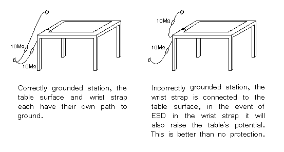
Otra forma de conectarse a tierra es con una correa en el talón. Se envuelve una parte de plástico conductor alrededor del talón del zapato, con una correa de plástico conductor que sube y se coloca debajo del calcetín para lograr un buen contacto con la piel. Sólo funciona en suelos con cera conductora u hormigón. El método evitará que una persona genere grandes cargas que puedan anular otras protecciones ESD y no se considera adecuado en sí mismo. Puedes conseguir el mismo efecto caminando descalzo sobre un suelo de cemento.
Otra protección ESD más es usar batas conductoras ESD. Al igual que la correa para el talón, esta es una protección secundaria y no está destinada a reemplazar la correa para la muñeca. Están destinados a cortocircuitar cualquier carga que pueda generar su ropa.
El aire en movimiento también puede generar importantes cargas estáticas. Cuando soplas el polvo de tus dispositivos electrónicos, se genera estática. Una solución industrial a este problema es doble: en primer lugar, las pistolas de aire comprimido tienen un material radiactivo pequeño y bien protegido implantado dentro de la pistola de aire para ionizar el aire. El aire ionizado es un conductor y elimina bastante bien las cargas estáticas. En segundo lugar, utilice electricidad de alto voltaje para ionizar el aire que sale de un ventilador, que tiene el mismo efecto que la pistola de aire comprimido. Esto ayudará efectivamente a que una estación de trabajo reduzca en gran medida el potencial de generación de ESD.
Otra protección ESD es la más sencilla de todas, la distancia. Muchas industrias tienen reglas que establecen que todos los materiales Neutrales y Generativos estarán al menos a 12 pulgadas o más de cualquier trabajo en progreso.
El usuario también puede reducir la posibilidad de daños por ESD simplemente no sacando la pieza de su embalaje protector hasta que llegue el momento de insertarla en el circuito. Esto reducirá la probabilidad de exposición a ESD y, si bien el circuito seguirá siendo vulnerable, el componente tendrá una protección menor del resto de los componentes, ya que los otros componentes ofrecerán diferentes rutas de descarga para ESD.
Storage and Transportation of ESD sensitive component and boards
No sirve de nada seguir las protecciones ESD en el banco de trabajo si las piezas se dañan durante el almacenamiento o el transporte. El método más común es utilizar una variación de una jaula de Faraday, una bolsa ESD. Una bolsa ESD rodea el componente con un blindaje conductor y normalmente tiene en su interior una capa aislante que genera electricidad estática. En jaulas de Faraday permanentes este escudo está conectado a tierra, como en el caso de las salas RFI, pero con contenedores portátiles esto no es práctico. Al colocar una bolsa ESD sobre una superficie conectada a tierra se logra lo mismo. Las jaulas de Faraday funcionan dirigiendo la carga eléctrica alrededor de su contenido y conectándolos a tierra inmediatamente. Un coche alcanzado por un rayo es un ejemplo extremo de jaula de Faraday.
Las bolsas estáticas son, con diferencia, el método más común para almacenar componentes y placas. Están fabricados con capas de metal extremadamente finas, tan finas que resultan casi transparentes. Una bolsa con un agujero, aunque sea pequeño, o una que no esté doblada en la parte superior para sellar el contenido de las cargas exteriores es ineficaz.
Otro método para proteger las piezas almacenadas son los contenedores o tubos. En estos casos las piezas se introducen en cajas conductoras, con tapa del mismo material. Esto efectivamente forma una jaula de Faraday. Un tubo está diseñado para circuitos integrados y otros dispositivos con muchas clavijas, y almacena las piezas en un tubo de plástico conductor moldeado que mantiene las piezas seguras tanto mecánica como eléctricamente.
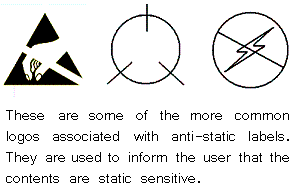
Conclusion
La ESD puede ser un evento menor no sentido que mide unos pocos voltios o un evento masivo que presenta peligros reales para los operadores. Todas las protecciones contra ESD pueden verse superadas por las circunstancias, pero esto se puede evitar si se es consciente de qué es y cómo prevenirlo. Muchos proyectos se han construido sin ninguna protección ESD y han funcionado bien. Dado que proteger estos proyectos es un inconveniente menor, es mejor hacer el esfuerzo.
La industria se toma el problema muy en serio, como un problema potencial que pone en peligro la vida y como un problema de calidad. Alguien que compra un dispositivo electrónico caro o hardware de alta tecnología no estará contento si tiene que devolverlo en 6 meses. Cuando la reputación está en juego, es más fácil hacer lo correcto.
Power Supply circuits
Power Supply types
Hay tres tipos principales de fuentes de alimentación:no regulado(también llamadofuerza bruta), lineal regulado, ytraspuesta. Un cuarto tipo de circuito de suministro de energía llamadoregulado por ondulación, es un híbrido entre los diseños de "fuerza bruta" y "cambio", y merece una subsección aparte.
No reguladoUna fuente de alimentación no regulada es el tipo más rudimentario y consta de un transformador, un rectificador y un filtro de paso bajo. Estas fuentes de alimentación suelen presentar una gran cantidad de voltaje ondulado (es decir, inestabilidad que varía rápidamente) y otros "ruidos" de CA superpuestos a la alimentación de CC. Si el voltaje de entrada varía, el voltaje de salida variará en una cantidad proporcional. La ventaja de un suministro no regulado es que es barato, sencillo y eficiente.
See Rectifier circuitsen el capítulo Diodos para las diversas configuraciones de los rectificadores utilizados en fuentes de alimentación no reguladas. Tenga en cuenta que esos circuitos no están filtrados. Normalmente se agrega un filtro de paso bajo a la salida del circuito rectificador para eliminar parte de la ondulación.
Una fuente de alimentación regulada lineal es simplemente una fuente de alimentación de "fuerza bruta" (no regulada) seguida de un circuito de transistores que funciona en su modo "activo" o "lineal", de ahí el nombre.linealregulador. (Obvio en retrospectiva, ¿no?) Un regulador lineal típico está diseñado para generar un voltaje fijo para una amplia gama de voltajes de entrada, y simplemente reduce cualquier exceso de voltaje de entrada para permitir un voltaje de salida máximo a la carga. Esta caída excesiva de voltaje da como resultado una importante disipación de energía en forma de calor. Si el voltaje de entrada baja demasiado, el circuito del transistor perderá la regulación, lo que significa que no podrá mantener el voltaje constante. Sólo puede reducir el exceso de voltaje, no compensar una deficiencia de voltaje de la sección de fuerza bruta del circuito. Por lo tanto, debe mantener el voltaje de entrada al menos entre 1 y 3 voltios por encima de la salida deseada, dependiendo del tipo de regulador. Esto significa la potencia equivalente de al menosel menos 1 to 3 volts multiplied by the full load current will be dissipated by the regulator circuit, generating a lot of heat. This makes linear regulated power supplies rather inefficient. Also, to get rid of all that heat they have to use large heat sinks which makes them large, heavy, and expensive.
TraspuestaUna fuente de alimentación regulada conmutada ("conmutador") es un esfuerzo por aprovechar las ventajas de los diseños de fuerza bruta y regulados linealmente (voltaje de salida pequeño, eficiente y barato, pero también "limpio" y estable). Las fuentes de alimentación conmutadas funcionan según el principio de rectificar el voltaje de la línea de alimentación de CA entrante en CC, reconvertirlo en CA de onda cuadrada de alta frecuencia a través de transistores operados como interruptores de encendido/apagado, aumentar o disminuir ese voltaje de CA mediante el uso de un transformador liviano, luego rectificar la salida de CA del transformador en CC y filtrar para la salida final. La regulación de voltaje se logra alterando el "ciclo de trabajo" de la inversión de CC a CA en el lado primario del transformador. Además de un peso más ligero debido a un núcleo de transformador más pequeño, los conmutadores tienen otra tremenda ventaja sobre los dos diseños anteriores: este tipo de fuente de alimentación puede ser tan totalmente independiente del voltaje de entrada que puede funcionar en cualquier sistema de energía eléctrica del mundo; éstas se denominan fuentes de alimentación "universales".
La desventaja de los conmutadores es que son más complejos y, debido a su funcionamiento, tienden a generar mucho "ruido" de CA de alta frecuencia en la línea eléctrica. La mayoría de los conmutadores también tienen un voltaje de ondulación significativo en sus salidas. Con los tipos más baratos, este ruido y ondulación pueden ser tan malos como en el caso de una fuente de alimentación no regulada; Estos conmutadores de gama baja no son inútiles, porque aún proporcionan un voltaje de salida promedio estable y existe la capacidad de entrada "universal".
Los costosos conmutadores no tienen ondulaciones y tienen un ruido casi tan bajo como el de algunos tipos lineales; Estos conmutadores tienden a ser tan caros como los suministros lineales. La razón para utilizar un conmutador costoso en lugar de un buen lineal es si necesita compatibilidad con el sistema de alimentación universal o alta eficiencia. La alta eficiencia, el peso ligero y el tamaño pequeño son las razones por las que las fuentes de alimentación conmutadas se utilizan casi universalmente para alimentar circuitos de computadoras digitales.
Ondulación reguladaUna fuente de alimentación regulada por ondulación es una alternativa al esquema de diseño regulado lineal: una fuente de alimentación de "fuerza bruta" (transformador, rectificador, filtro) constituye el "extremo frontal" del circuito, pero un transistor operado estrictamente en sus modos de encendido/apagado (saturación/corte) transfiere energía CC a un condensador grande según sea necesario para mantener el voltaje de salida entre un punto de ajuste alto y bajo. Al igual que en los conmutadores, el transistor en un regulador de ondulación nunca pasa corriente mientras está en su modo "activo" o "lineal" durante un período de tiempo sustancial, lo que significa que se desperdiciará muy poca energía en forma de calor. Sin embargo, el mayor inconveniente de este esquema de regulación es la presencia necesaria de cierta tensión de rizado en la salida, ya que la tensión CC varía entre los dos puntos de ajuste de control de tensión. Además, este voltaje de ondulación varía en frecuencia dependiendo de la corriente de carga, lo que dificulta el filtrado final de la potencia CC.
Los circuitos reguladores de ondulación tienden a ser bastante más simples que los circuitos de conmutación y no necesitan manejar los altos voltajes de línea de alimentación que deben manejar los transistores de conmutación, lo que los hace más seguros para trabajar.
Power Supply Introduction
Los circuitos de suministro de energía son una clase de circuitos que están diseñados para convertir energía eléctrica para alguna carga. Cada fuente de alimentación consta de al menos tres partes:
- Una fuente de alimentación de entrada, que entrega energía a algún voltaje o rango de voltajes V1
- Una carga que requiere energía entregada a algún voltaje o rango de voltajes V2
- Circuito de conversión, que recibe el voltaje V1 como entrada y genera el voltaje V2 como salida.
Algunos dispositivos son lo suficientemente simples como para funcionar correctamente sin modificaciones en el voltaje y la corriente proporcionados por la fuente de entrada. Por ejemplo, la bombilla dentro de una linterna de bajo costo está diseñada para emitir luz cuando se conecta en serie con algunas baterías, lo que significa que todo el circuito de conversión está formado solo por cables. De manera similar, las bombillas incandescentes domésticas están diseñadas para funcionar correctamente cuando se conectan a una fuente de CA, funcionan con un voltaje y una frecuencia de línea bien regulados. Pero para la mayoría de los dispositivos electrónicos, no resulta práctico operar un circuito completo con voltajes comúnmente disponibles. Las computadoras, los teléfonos celulares, los estéreos de los automóviles, los sensores de los aviones, los semáforos y los marcapasos tienen elementos que requieren voltajes drásticamente diferentes a los suministrados por cualquier fuente de energía común. Los circuitos de suministro de energía bien diseñados convierten casi toda la energía suministrada por baterías, células solares, líneas de CA y otras fuentes de energía a niveles de voltaje adecuados para el funcionamiento de complejos dispositivos electrónicos.
Estas son algunas de las consideraciones típicas a la hora de diseñar un circuito de alimentación:
EficienciaLa eficiencia se define como la potencia de salida dividida por la potencia de entrada total. La eficiencia teórica máxima de un circuito es del 100%, y esto tiene sentido: el único lugar de donde puede provenir la energía de salida en una fuente de alimentación es la fuente de energía de entrada. La energía que se consume en el proceso de conversión y no se entrega como potencia de salida se denomina pérdida de potencia. Todos los circuitos de suministro de energía tienen algunas pérdidas, incluso si esas pérdidas son muy pequeñas. Maximizar la eficiencia y minimizar las pérdidas es de importancia clave en el diseño del suministro de energía. Los dispositivos altamente eficientes pueden durar más con una sola carga de batería, costar menos dinero para operar desde una línea de CA de servicios públicos y generar menos calor.
CalorLa pérdida de energía se disipa fuera de un circuito de suministro de energía en forma de calor. Es posible que los componentes semiconductores muy pequeños sólo puedan disipar unos pocos cientos de milivatios antes de que se calienten demasiado y fallen. Por otro lado, las fuentes de alimentación muy grandes pueden convertir varios kilovatios de energía y habitualmente ver decenas de vatios disipados en sólo unos pocos componentes. Para complicar aún más las cosas, muchas fuentes de alimentación están diseñadas para funcionar en entornos fríos o calientes, donde las temperaturas pueden variar en más de 100 grados.oC. A temperaturas más altas, los dispositivos deben reducirse térmicamente para evitar el sobrecalentamiento, lo que reduce significativamente la potencia de salida máxima disponible. A temperaturas más frías, se pueden esperar desviaciones considerables en los valores de los componentes, y los cambios rápidos en la carga pueden provocar efectos de choque térmico, donde el calentamiento y enfriamiento repetidos tensionan los componentes hasta el punto de fallar. En la mayoría de los casos, el rendimiento en temperaturas frías se puede garantizar con la selección adecuada de componentes; eliminar el calor residual y prevenir daños por sobrecalentamiento reciben mucha más atención.
Para evitar fallos de los componentes, los componentes de alta disipación suelen estar conectados a disipadores de calor. A veces, el único disipador de calor necesario es una conexión sólida a un plano de cobre en una placa de circuito impreso. Pero para algo más allá de unos pocos vatios, los componentes deben conectarse a un bloque de metal separado y térmicamente conductor. Al colocar largas aletas metálicas en estos bloques, se puede aumentar el área de la superficie para aumentar la transferencia de calor por convección. También se puede utilizar un ventilador para aumentar el flujo de aire. Algunos diseños incluso utilizan agua o aceite que viaja a través del bloque para eliminar de forma más eficaz el calor residual.
Como regla general, la mayoría de los semiconductores comienzan a sufrir daños cuando la temperatura interna del circuito alcanza los 150ºC.oC, aunque algunos dispositivos están diseñados para soportar temperaturas aún más altas. Otros componentes, como inductores y condensadores, están disponibles en una amplia gama de temperaturas y tolerancias de funcionamiento, y se cobra una prima por temperaturas más extremas y tolerancias más estrictas.
TamañoEn algunos dispositivos, como los teléfonos móviles o los relojes inteligentes, puede haber decenas o cientos de componentes fabricados para caber en sólo unos pocos centímetros cuadrados. Los circuitos de alimentación de este tipo de dispositivos deben ser pequeños y dejar espacio para otros componentes con muchas funciones. En otros dispositivos, como la electrónica de los aviones, los requisitos de energía son lo suficientemente grandes como para que muchos componentes deban conectarse a un disipador de calor. Esto puede añadir un peso significativo al diseño general, lo que reduce la economía de combustible del avión. El tamaño está directamente relacionado con la cantidad de energía que se convierte y la eficiencia de la conversión. Cuanta más energía se convierta, más grandes deben ser los componentes para distribuir el autocalentamiento y soportar los altos voltajes utilizados para conversiones de energía más grandes. Las mejoras en la eficiencia pueden ayudar a reducir el tamaño del suministro, ya que se requiere menos disipación de calor.
CostoComo era de esperar, el costo es un factor crítico. Generalmente, a medida que aumentan tanto la potencia como la eficiencia, también aumenta el costo del suministro de energía. Este aumento de costos proviene de una combinación de componentes costosos pero bien optimizados, una mayor complejidad que conduce a ciclos de diseño y prueba más largos y costos asociados con el cumplimiento normativo. Como en cualquier desafío de ingeniería, el diseño de la fuente de alimentación es una compensación entre rendimiento y costo aceptables. Dado que todos los dispositivos electrónicos requieren uno o más circuitos de suministro de energía, es común una optimización agresiva de costos. En la fabricación de gran volumen, ahorrar incluso unos pocos centavos por producto puede reducir los costos de construcción en miles de dólares.
Regulación de líneaLa regulación de línea es una medida de qué tan bien un circuito de suministro de energía puede responder a los cambios en el voltaje de la fuente de entrada. Muchas fuentes de energía de entrada presentan un amplio rango de voltaje en la entrada de una fuente de alimentación: los voltajes de la batería pueden variar en un 30% o más a lo largo de un ciclo de carga, los voltajes de las células solares varían proporcionalmente a la luz solar incidente y los voltajes de la línea de CA pueden (en raras ocasiones) desviarse hasta un 20% en cualquier dirección. La regulación de línea se define como el voltaje de salida al voltaje de entrada máximo/mínimo, menos el voltaje de salida al voltaje de entrada nominal. También se puede dar como porcentaje del valor de la tensión de salida nominal. Una fuente de alimentación ideal tiene una regulación de línea perfecta, ±0 V o ±0 % de cambio. No es raro que las fuentes de alimentación modernas vean valores < ±5mV o < ±0,1%.
Regulación de cargaLa regulación de carga es una medida de qué tan bien puede responder un circuito de suministro de energía a los cambios en la carga de salida. A medida que aumenta la potencia de salida, el calentamiento por pérdida de potencia provoca cambios en los parámetros de referencia utilizados por el circuito para controlar la salida. Los diseñadores de fuentes de alimentación utilizan circuitos de referencia cuidadosamente diseñados para minimizar los efectos de las variaciones de temperatura, pero aún existen efectos observables. La regulación de carga se define como el voltaje de salida a plena carga, menos el voltaje de salida sin carga. También se puede dar como porcentaje del valor de la tensión de salida nominal. Una fuente de alimentación ideal tiene una regulación de carga perfecta, 0V o 0% de cambio. Los circuitos de suministro de energía modernos pueden alcanzar valores similares a la regulación de línea.
Rechazo de ondulaciónPara muchos circuitos de suministro de energía con una línea de CA como entrada, la frecuencia de la línea se acopla a través del suministro a la salida. Algunos circuitos de suministro de energía especifican un rechazo de ondulación, generalmente en dB, que se define como la magnitud de una frecuencia específica en la salida (comúnmente 100 Hz o 120 Hz) en relación con la magnitud de esa misma frecuencia específica en la entrada.
Corriente de reposoIncluso sin carga, se requiere algo de energía para mantener regulada la fuente de alimentación. La corriente de mantenimiento utilizada para alimentar los circuitos de control del suministro se denomina corriente de reposo. Este valor tiene un amplio rango, que abarca desde cientos de miliamperios hasta cientos de nanoamperios.
Impedancia de salidaUna fuente de voltaje ideal tiene impedancia de salida cero. Los convertidores prácticos ven una pequeña impedancia de salida, que tiende a crecer a frecuencias más altas. Para que una fuente de alimentación regule eficazmente cargas que cambian en milisegundos o menos, es obligatoria una impedancia de salida baja. De lo contrario, los cambios repentinos en la corriente de carga producirán cambios severos en el voltaje de salida. Casi todos los convertidores pueden alcanzar fácilmente impedancias de salida inferiores a un ohmio; <10 mΩ en CC no es infrecuente.
Ruido del voltaje de salidaLos electrones que fluyen en resistencias y transistores son susceptibles a eventos termodinámicos, fluctuaciones estadísticas en la densidad de corriente y otros fenómenos complejos a escala de partículas. Estas tendencias se manifiestan en todos los circuitos, incluidos los circuitos de suministro de energía, como ruido en el voltaje de salida. Aunque el valor promedio de la salida de una fuente de alimentación es constante, el ruido puede hacer que la salida experimente excursiones de milivoltios en una escala de microsegundos o submicrosegundos. Para circuitos analógicos de menor potencia que dependen de voltajes de fuente de alimentación estrictamente regulados, como convertidores analógicos a digitales de alta resolución u osciladores de alta frecuencia, el ruido de la fuente de alimentación puede afectar el rendimiento. Debido a que las fuentes de ruido tienden a ser una función de la frecuencia, el ruido comúnmente se enumera como un valor integrado en un rango de frecuencia (en voltios RMS), o se especifica como un gráfico de densidad espectral de ruido que compara el ruido (en voltios/
Los diseños de mayor potencia tienden a introducir ruido del orden de decenas o cientos de milivoltios, concentrado en frecuencias específicas, en función de su construcción. Aunque existen algunos diseños que pueden controlar estrictamente incluso el ruido del suministro de alta potencia, son costosos y, por lo tanto, están reservados para equipos especializados de prueba y medición. Prácticamente todas las fuentes de alimentación prácticas de más de unos pocos vatios generarán milivoltios de ruido en la salida y, para muchos tipos de carga, esto no afecta en lo más mínimo el rendimiento del dispositivo. Es común utilizar una fuente de alimentación eficaz pero ruidosa para cargas insensibles y como entrada a una segunda fuente de alimentación más silenciosa.
Linear power supplies
Hay dos tipos principales de fuentes de alimentación cuyo comportamiento de salida se puede determinar según ecuaciones lineales: reguladores en derivación y reguladores en serie. Reguladores de derivación (en la figura belowSe llaman así porque desvían la corriente de carga innecesaria para mantener la salida regulada. En un regulador en derivación, es necesaria una corriente de reposo alta, ya que la derivación debe poder redirigir la corriente de carga completa en condiciones sin carga. Esto puede conducir a una alta disipación de potencia, especialmente para corrientes de carga plena apreciablemente grandes. Lo bueno es que son relativamente simples, a menudo están hechos de elementos totalmente pasivos y pueden reducirse a dispositivos de dos terminales.
{kind=link}
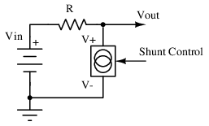
Reguladores de derivación
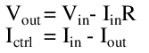
Los reguladores en serie, por el contrario, regulan la corriente de entrada con un elemento de paso para controlar la corriente de salida entregada a una carga que se muestra en la Figura below. Esto se puede utilizar para reducir la corriente de reposo a casi nada con poca carga o sin carga, aunque siempre debe pasar algo de corriente a través del elemento en serie para garantizar una regulación adecuada del voltaje de salida. Sin embargo, el regulador en serie debe controlar tanto la caída de voltaje como la corriente a través del elemento en serie para regular el voltaje de salida, y no se puede utilizar ningún elemento pasivo para garantizar este comportamiento. Debido a la necesidad de algún tipo de circuito de detección de salida, casi siempre se requiere una solución de tres terminales.
{kind=link}
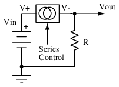
Reguladores en serie
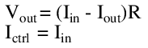
Con el fin de ilustrar los términos comunes que se ven en el diseño de fuentes de alimentación, considere la siguiente especificación: Supongamos que es necesario tomar una salida estática de 15 V de un convertidor y reducirla a un nivel de 5 V. El voltaje de entrada puede variar hasta ±3 V y la corriente de salida debe ser de 500 mA como máximo. En los siguientes ejemplos, se explorarán varias topologías básicas y se compararán las fortalezas y debilidades relativas de los diferentes enfoques.
Suministro de ejemplo: divisor de resistencia
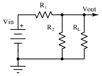
Fuente de alimentación del divisor de resistencia
El humilde circuito divisor de resistencia de la figura. aboveEs quizás el circuito de suministro de energía más simple. Si bien su comportamiento es completamente lineal, es difícil decir si dicho suministro debe considerarse un regulador en derivación o en serie, ya que el voltaje de salida es una función tanto de los elementos en derivación como en serie. A los efectos de este primer ejemplo, la distinción no es importante. Las no idealidades de este circuito, especialmente cuando está limitado por la especificación anterior, lo hacen útil para conceptualizar los términos comunes utilizados en el diseño de fuentes de alimentación.
{kind=link}
Los valores de resistencia deben ser pequeños para permitir simultáneamente 500 mA a través del elemento de paso sin causar una caída de voltaje excesiva y mantener un voltaje de salida nominal de 5 V desde un suministro de 15 V. Los valores 15Ω y 7,5Ω se seleccionan para R1 y R2, respectivamente. El comportamiento del circuito se puede describir mediante un sistema de ecuaciones, primero usando la ley de Ohm en la salida, segundo usando la ecuación divisoria estándar considerando R2 y la carga en paralelo:
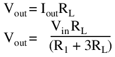
Al seleccionar valores para Vin y otro parámetro, y resolver las incógnitas restantes, se puede interrogar el rendimiento de este circuito. Los puntos clave se resumen a continuación.
Eficiencia:Para lograr la corriente de salida máxima de 500 mA con condiciones de entrada nominal (Vin = 15 V), al resolver el sistema de ecuaciones se obtiene:
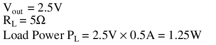
Mientras tanto, la potencia de entrada es el voltaje de entrada multiplicado por la corriente de entrada, y la corriente de entrada se encuentra como:
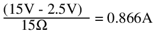
Por lo tanto,
Nuestra eficiencia a plena carga es entonces:
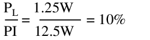
También se puede demostrar mediante cálculo que la máxima eficiencia se logra con una resistencia de carga de 5 Ω, lo que produce solo un 10,1 % de eficiencia. Estos valores no son impresionantes. Curiosamente, un cálculo rápido revelará que esta eficiencia máxima es la misma, independientemente del voltaje de entrada. Esto tiene sentido, ya que la potencia de salida es proporcional a la potencia de entrada para el mismo circuito.
Corriente de reposo:Sin carga, el circuito consume:
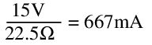
Esto es, por cierto margen, más que el resultado máximo y es un gran desperdicio en comparación con lo que podría lograrse con otras topologías. Peor aún, la corriente total sólo aumenta al aumentar la carga.
Calor:Sin carga, el circuito disipa 10 W de potencia y, con carga completa, aumenta a 12,5 W. En condiciones de cortocircuito, esto aumenta a 15W, todos disipados en R1. Tanto R1 como R2 tendrían que ser resistencias bobinadas grandes, o requerirían refrigeración activa, para que este suministro funcione a temperatura ambiente. El rendimiento por encima de la temperatura ambiente es más difícil.
Regulación de carga:A plena carga, el voltaje de salida cae de 5V a 2,5V. De la ecuación de regulación de carga encontramos que este suministro tiene la siguiente regulación de carga:
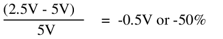
Esto es atroz. Cualquier mejora en la regulación de la carga también es prácticamente inviable; para hacer que la combinación en paralelo de R2 y la carga sea insignificantemente diferente de la carga, incluso a plena carga, el valor de R1 y R2 necesitaría reducirse aún más en más de un orden de magnitud, lo que necesariamente aumentaría la corriente de reposo y disminuiría la eficiencia en el mismo grado. No es razonable requerir más de 100 W de disipación de potencia para mantener una regulación de carga razonable desde un divisor de resistencia. Idealmente, ni siquiera debería necesitar milivatios.
Regulación de línea:A 18 V sin carga, el voltaje de salida es:
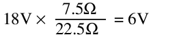
Mientras tanto, a 12 V, el voltaje de salida es:
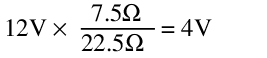
Esto corresponde a una regulación de línea de ±1V o ±20%. Esto es bastante terrible.
En cuanto al tema de las variaciones de voltaje de entrada, considere que los valores de corriente de reposo y regulación de carga cambiarán para diferentes voltajes de entrada. A medida que aumenta el voltaje de entrada, aumenta la corriente de reposo y aumenta la generación de calor. La salida entregará 500 mA a una carga de 7 Ω a 3,5 V. A <15 V, el voltaje de salida disminuye sustancialmente, entregando 500 mA a una carga de 3 Ω a 1,5 V. Dado que el voltaje de salida es directamente proporcional al voltaje de entrada, la salida depende de un voltaje de entrada estable, lo que no siempre es posible.
Impedancia de salida:Mediante un análisis de señal pequeña, la fuente de voltaje en Vin está en cortocircuito y la impedancia de salida es simplemente la combinación en paralelo de R1||R2, o 5Ω. Dado que esta impedancia de salida es estática en todos los cambios en el voltaje de entrada y la corriente de salida, es comprensible por qué el voltaje de salida varía tanto con cada cambio en las condiciones de entrada y carga.
Ruido de salida:Aunque esta resistencia se verá afectada por el ruido térmico, el ruido estándar 1/f y el exceso de ruido debido a la construcción de la resistencia, en última instancia, es poco probable que el ruido sea la mayor preocupación en este diseño, y el análisis de ruido real se guardará para circuitos más merecedores.
El rendimiento de este circuito como fuente de alimentación es abismal. Para ser justos con el divisor de resistencia, el uso más común de dicho circuito es la división de voltaje en cargas de alta impedancia, como pines de entrada de amplificador y compuertas de transistores. Para estas condiciones de carga de alta impedancia, el divisor puede considerarse muy cercano a lo ideal y, como tal, no suele considerarse un circuito de suministro de energía. Sin embargo, cuando las condiciones de funcionamiento comienzan a cambiar (como con variaciones en el voltaje de suministro o incluso pequeños aumentos de corriente de carga), aún se puede hacer que las entradas del amplificador de alta impedancia y los transistores se comporten mal.
En este ejemplo poco práctico, debería quedar claro que un divisor de resistencia no es adecuado para ninguna entrega de energía importante, con una regulación de línea y carga completamente inutilizable y una eficiencia general horrible. Sin embargo, con sólo una pequeña modificación, este circuito puede ampliarse con una regulación de línea y carga enormemente mejorada. Esto se explora en el siguiente ejemplo.
Suministro de ejemplo:Divisor Zener
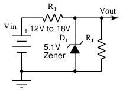
Fuente de alimentación divisor Zener
El circuito de la figura. abovees un divisor Zener (los diodos Zener se analizan en el capítulo 3). Al sustituir un diodo Zener con polarización inversa en lugar de R2 en el circuito anterior, se puede aprovechar la impedancia Zener cambiante por encima de un cierto punto de inflexión de corriente inversa para garantizar un voltaje de salida estable en diferentes condiciones de línea y carga. Teniendo en cuenta que los diodos Zener sólo se pueden construir con ciertos voltajes inversos, se elige la salida estable más cercana a 5 V, lo que da un voltaje Zener de 5,1 V. Sin carga, toda la corriente disponible pasará a través del diodo Zener. Al elegir que esta corriente de carga sea ligeramente superior a 500 mA con carga máxima (por ejemplo, 10 mA), se puede garantizar la regulación incluso cuando se entrega a la carga la corriente de carga completa. Se selecciona R1 para todos los voltajes dentro de la tolerancia del rango de voltaje de entrada: el peor de los casos, a 12 V, requiere que:
{kind=link}
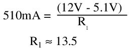
Mientras el diodo Zener tenga corriente a través de él, ahora se puede conectar una carga de 10,2 Ω, con cualquier voltaje de suministro de entrada en el rango especificado, y se le entregarán 500 mA. Para probar esta afirmación, pruebe el comportamiento en Vin = 12 V y Vin = 18 V:
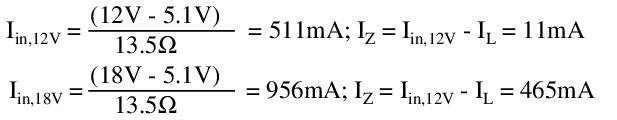
Por lo tanto, en teoría, este diseño debería poder cumplir todos los requisitos. Un examen más detenido de los parámetros afectados ofrece algunas advertencias.
Eficiencia:La eficiencia del regulador Zener difiere según el voltaje de entrada y la carga de salida. La mejor eficiencia para cualquier voltaje de entrada es con carga completa, y la mejor eficiencia para cualquier carga es con el voltaje de entrada mínimo. En esta condición encontramos que:
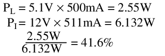
Esto es mejor que el divisor de resistencia, pero no mucho, y solo en un extremo de operación. En el otro extremo los resultados son menos impresionantes:
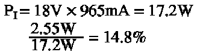
Corriente de reposo:Sin carga, toda la corriente operativa del regulador Zener debe viajar a través del diodo Zener. En el mejor de los casos, esto siempre es mayor que la corriente de salida máxima; En el peor de los casos, puede ser mucho mayor. ¡A 17 V, este regulador consume casi el doble de la corriente de salida máxima!
Calor:Dado que la corriente de reposo del regulador Zener es siempre mayor que la corriente de funcionamiento máxima, en el peor de los casos la disipación de potencia conduce a una gran cantidad de calor disipado tanto en R1 como en el diodo. Sin embargo, a medida que aumenta la corriente de carga, el diodo Zener disipa cada vez menos potencia, ya que la corriente y por tanto la potencia deben desviarse del diodo a la carga de salida. Mientras tanto, la disipación de potencia de R1 permanece casi constante durante la carga, pero se beneficia de un voltaje de entrada más bajo. Si por alguna razón la corriente de salida excede la corriente de reposo (como durante un cortocircuito), la disipación de potencia en R1 aumenta por encima del punto de funcionamiento típico en el peor de los casos, lo que requiere un componente más grande o una mejor refrigeración para soportar este estrés. Incluso en condiciones de funcionamiento normales, R1 todavía se disipa lo suficiente como para requerir una resistencia bobinada grande y probablemente alguna forma de enfriamiento activo:
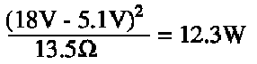
Vale la pena señalar, de paso, que en el peor de los casos el diodo Zener debe disipar cerca de 5W; Si bien existen diodos Zener capaces de esto, 5W es un valor inusualmente grande para un diodo Zener. Con requisitos de corriente de carga máxima más pequeños, se pueden utilizar Zeners de baja potencia a costos sustancialmente reducidos.
Regulación de línea y carga:Desde un punto de vista ideal, el voltaje Zener es siempre de 5,1 V, en todas las condiciones de línea y carga. En realidad, sin embargo, el diodo Zener tiene algunos efectos relacionados con la temperatura que hacen que cambie el voltaje Zener. Peor aún, no todos los efectos de la temperatura actúan en la misma dirección. Los diodos Zener de bajo voltaje se comportan predominantemente según el efecto Zener, un proceso de tunelización de electrones, que tiene un coeficiente de temperatura negativo (el voltaje Zener disminuye al aumentar el calor). Los diodos Zener de voltaje más alto se comportan predominantemente de acuerdo con el efecto de avalancha, una forma de multiplicación de corriente que tiene un coeficiente de temperatura positivo (el voltaje Zener aumenta al aumentar el calor). Alrededor de 4 V a 6 V, y dependiendo de la corriente Zener, los coeficientes de temperatura de estos dos mecanismos se combinarán y ocasionalmente pueden cancelarse casi por completo. Desafortunadamente, todavía hay algún efecto a 5,1 V; Un 1N5338B con clasificación de 5 W, por ejemplo, puede ver una diferencia de casi 0,4 V en la temperatura, normalmente aumentando el voltaje.
Una aproximación básica de este efecto puede explicar la dificultad. Con una tensión de alimentación de 15 V, sin carga, la corriente y la potencia Zener son:
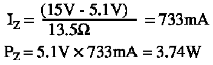
Suponiendo que el cambio en el voltaje Zener es de hasta 0,4 V a 5 W para el diodo Zener dado, y el cambio es lineal y positivo, el voltaje Zener puede aumentar en respuesta al aumento de la temperatura de la unión hasta en:
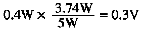
Esto cambia la corriente y potencia Zener a:
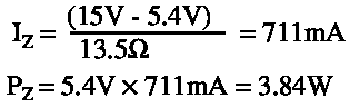
La iteración muestra que este cambio en el voltaje Zener con la temperatura eventualmente se estabiliza; aún así, la producción está lejos de su valor ideal. A medida que aumenta la corriente de carga, la corriente Zener disminuye, lo que devuelve el voltaje de salida a un valor más bajo. La regulación de línea y carga es difícil de estimar con precisión, ya que no siempre se puede predecir la ubicación exacta de la rodilla Zener, el efecto de la variación del proceso sobre el coeficiente de temperatura y la variación del coeficiente de temperatura con la corriente Zener. Ambos se verifican frecuentemente experimentalmente o con una simulación de especias. En términos generales, con una oscilación de regulación máxima especificada de aproximadamente 0,4 V, y asumiendo que puede ser positiva o negativa para un diodo Zener de 5,1 V, la regulación combinada de línea y carga se puede expresar como:
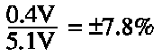
Impedancia de salida:Para el análisis de señales pequeñas, las fuentes de voltaje están en cortocircuito. La impedancia que mira hacia la salida es solo R1||RZ. Pero RZ es un valor dinámico, basado en el voltaje Zener (Vout) y la corriente Zener (Iz).
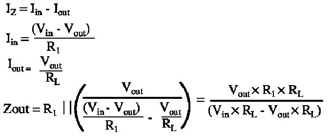
En el límite, cuando RL se acerca al infinito, Zout se convierte en Vout x R1/Vin, aproximadamente 4,59 Ω con una entrada de 15 V. Curiosamente, a partir de esta ecuación podemos descubrir que la impedancia de salida aumenta en función del aumento de la carga, hasta un máximo de R1 en un cortocircuito total en la salida. La salida está regulada porque la impedancia de salida cambia continuamente para coincidir con el nivel de carga.
Ruido de salida:El tema del ruido de salida de los diodos Zener es complicado. Debido a los diferentes mecanismos de comportamiento del diodo Zener, existen diferentes fuentes de ruido para diferentes voltajes y corrientes Zener. Aquí se harán algunos intentos de simplificar estos temas.
Los diodos Zener de bajo voltaje funcionan según el efecto Zener, donde electrones discretos atraviesan una barrera. Dado que se trata de un proceso aleatorio discreto centrado en un valor medio, sigue una distribución de Poisson y genera el ruido de disparo correspondiente. El nivel de ruido es proporcional a la raíz cuadrada del número de eventos discretos. Por lo tanto, a medida que aumenta la corriente, también aumenta el ruido de disparo. Para una corriente Zener dada IZy voltaje Zener VZy recordando la carga elemental del electrón q = 1,6 x 10-19 culombios, el ruido del disparo es:
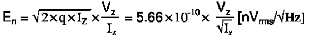
Sin carga, este efecto es casi insignificante, ya que es inversamente proporcional a IZ. Pero a plena carga, yoZse encoge considerablemente. El ruido a plena carga para Vin= 12 V es 7 veces peor que el ruido sin carga. A 18V, ya que la diferencia en IZsin carga y con carga completa es menor, el efecto es mucho menos pronunciado.
Los diodos Zener de alto voltaje funcionan con el efecto de avalancha, donde un portador choca con muchos otros y provoca una multiplicación de avalancha de movimientos de portador, lo que resulta en un ruido de ancho de banda amplio que puede exceder el ruido de disparo simple en órdenes de magnitud. De hecho, la ecuación es casi idéntica, pero depende hasta cierto punto del tiempo de recombinación de cada nuevo electrón en la avalancha. Sin profundizar demasiado en la física, suele ser suficiente introducir un multiplicador grande en la ecuación del ruido de disparo original. Mientras que un diodo Zener de bajo voltaje podría medir su ruido de banda ancha en cientos de nV, un diodo Zener de alto voltaje podría medir su ruido de banda ancha en cientos de µvoltios o incluso milivoltios bajos.
Para mantener un diodo Zener con el menor ruido posible, sólo hay dos requisitos: primero, utilizar un diodo Zener de bajo voltaje, para minimizar el ruido de avalancha; en segundo lugar, utilice una corriente Zener grande, incluso a plena carga. Aunque aumentar la corriente aumenta la disipación de potencia, lo que podría provocar un mayor ruido térmico, recuerde que el ruido térmico es proporcional a la impedancia Zener y que la impedancia Zener se reduce más rápido de lo que crece la temperatura absoluta. En el diseño de fuentes de alimentación, el ruido Zener rara vez es un problema, ya que se pueden crear otros reguladores con menos ruido, más eficiencia y mejor regulación de línea y carga.
En general, los reguladores en derivación se utilizan en casos en los que la disipación de potencia es insignificante y la corriente de carga es pequeña (decenas de miliamperios o menos). Los reguladores de derivación más complejos pueden incorporar esquemas de compensación que minimicen los efectos de las variaciones de línea, carga y temperatura. Los mecanismos exactos de estos esquemas de compensación están más allá del alcance de esta discusión, pero se pueden lograr valores de regulación de línea y carga de <1% con esquemas de regulación en derivación, en un rango muy amplio de temperaturas y voltajes de entrada.
Amplifier circuits -- PENDING
Nota, Q3y q4en la figura belowson complementarios, NPN y PNP respectivamente. Este circuito funciona bien para amplificadores de audio de potencia moderada. Para obtener una explicación de este circuito, consulte "Par complementario de acoplamiento directo". Ch 4 .
{kind=link}
{kind=link}
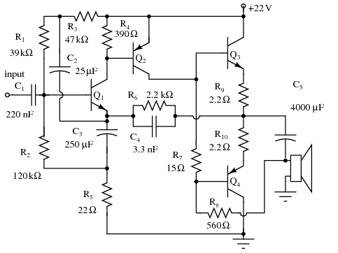
Amplificador de audio de 3 w de simetría complementaria de acoplamiento directo. Después de Mullard.[MUL]
Oscillator circuits -- INCOMPLETE
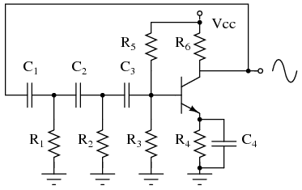
Oscilador de cambio de fase. R1C1, R2C2y R3C3cada uno proporciona 60ode cambio de fase.
El oscilador de cambio de fase de la figura aboveproduce una salida de onda sinusoidal en el rango de frecuencia de audio. La retroalimentación resistiva del colector sería una retroalimentación negativa debido a 180ofase (inversión de fase de base a colector). Sin embargo, los tres 60oDesfasadores RC ( R1C1, R2C2y R3C3) proporcionar 180 adicionalesopara un total de 360o. Esta retroalimentación en fase constituye una retroalimentación positiva. Se producen oscilaciones si la ganancia del transistor excede las pérdidas de la red de retroalimentación.
{kind=link}
Varactor multiplier
Un varactor o diodo de capacitancia variable con una característica de capacitancia versus frecuencia no lineal distorsiona la onda sinusoidal aplicada f1 en la Figura below, generando armónicos, f3.
{kind=link}
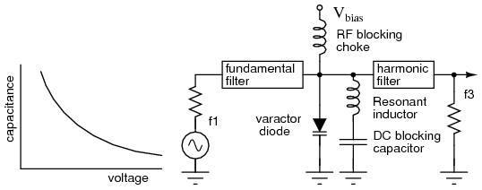
El diodo varactor, que tiene una característica de capacitancia versus voltaje no lineal, sirve como multiplicador de frecuencia.
El filtro fundamental pasa por f1, bloqueando el regreso de los armónicos al generador. El estrangulador pasa CC y bloquea la entrada de frecuencias de radio (RF) al V.inclinaciónsuministrar. El filtro de armónicos pasa el armónico deseado, digamos el tercero, a la salida f3. El condensador en la parte inferior del inductor es de gran valor y baja reactancia, para bloquear CC pero conectar a tierra el inductor para RF. El diodo varicap en paralelo con el indicador constituye una red resonante paralela. Está sintonizado al armónico deseado. Tenga en cuenta que el sesgo inverso, Vinclinación, está arreglado.
El multiplicador varicap se utiliza principalmente para generar señales de microondas que los osciladores no pueden producir directamente. La representación del circuito agrupado en la figura. aboveson en realidad secciones de línea de banda o guía de ondas. Los multiplicadores de varactor pueden producir frecuencias de hasta cientos de GHz.
Phase-locked loops -- PENDING
Radio circuits -- INCOMPLETE
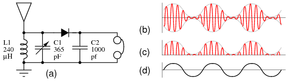
(a) Radio de cristal. (b) RF modulada en la antena. (c) RF rectificada en el cátodo del diodo, sin condensador de filtro C2. (d) Audio desmodulado a auriculares.
Un sistema de antena a tierra, un circuito de tanque, un detector de picos y unos auriculares son los componentes principales de unradio de cristal. Ver figura above(a). La antena absorbe las señales de radio transmitidas (b) que llegan a tierra a través de los demás componentes. La combinación de C1 y L1 comprende un circuito resonante, denominadocircuito del tanque. Su propósito es seleccionar una entre muchas señales de radio disponibles. El condensador variable C1 permitesintonizacióna las distintas señales. El diodo pasa los semiciclos positivos de la RF, eliminando los semiciclos negativos (c). C2 tiene el tamaño para filtrar las frecuencias de radio de la envolvente de RF (c), pasando las frecuencias de audio (d) a los auriculares. Tenga en cuenta que no se requiere fuente de alimentación para una radio de cristal. Un diodo de germanio, que tiene una caída de tensión directa más baja, proporciona una mayor sensibilidad que un diodo de silicio.
{kind=link}
Si bien los auriculares magnéticos de 2000 Ω se muestran arriba, un auricular de cerámica, a veces llamado auricular de cristal, es más sensible. El auricular de cerámica es deseable para todas las señales de radio excepto las más fuertes.